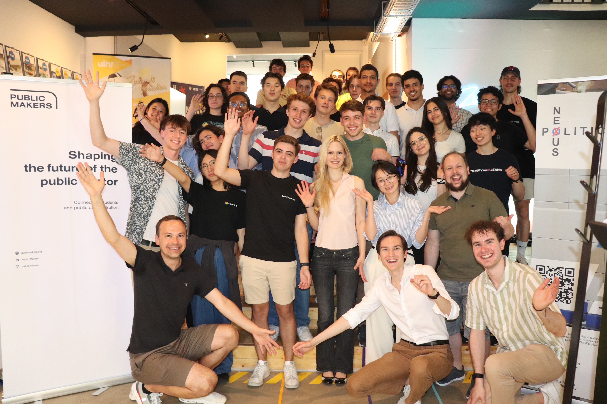

01Application
- Apply in March or October
- Stage 1: Written Application
- Stage 2: Interview

We build the people who drive it from the inside.
Change in public policy comes from people who understand the system and have the skills to move it. We invest in those people first: mentoring, real responsibility, and room to grow faster than any job would allow.

Drive projects and your personal growth in public policy making!
From day one you’ll make decisions that matter, lead projects that shape real policy and grow every skill you touch along the way. We back you with a team that wants you to outgrow us.
„Being involved in Public Makers enabled me to lead projects and connect with likeminded people that want to make change happen in the public sector. “Maria Kamenskaya,Head of Design at Public Makers
Yes — we connect students, alumni, public-sector partners and supporters in a long-term community.
Neither — we run educational formats and co-create projects with public administration. We don't take equity or scale ventures.
We are non-partisan. We work with institutions across the political spectrum and focus on the public good.
No — Public Makers runs alongside your studies. Time commitment varies by role.
Real experience with public institutions, a peer network you can lean on for years, and a clearer compass for the change you want to make.